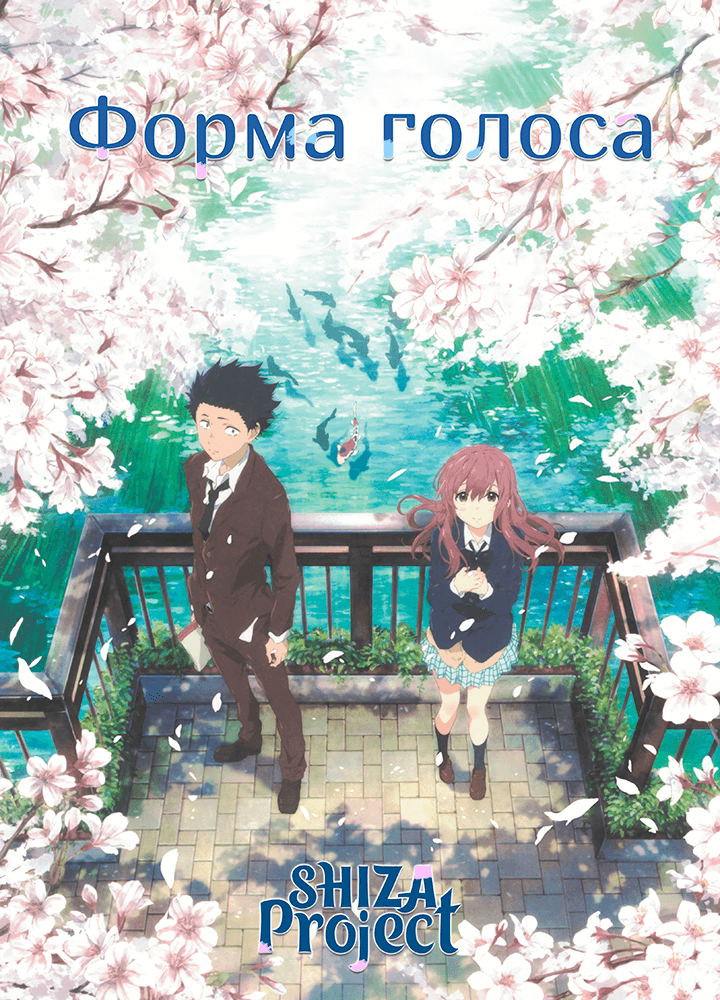
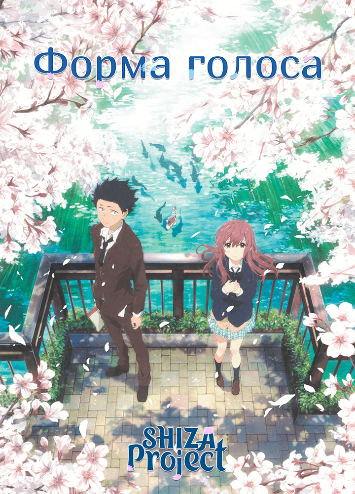
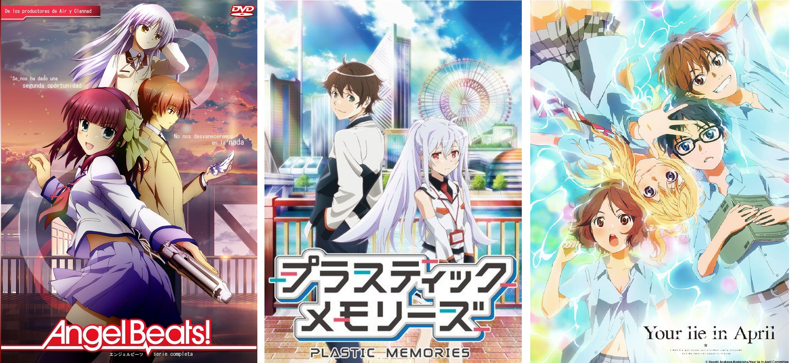
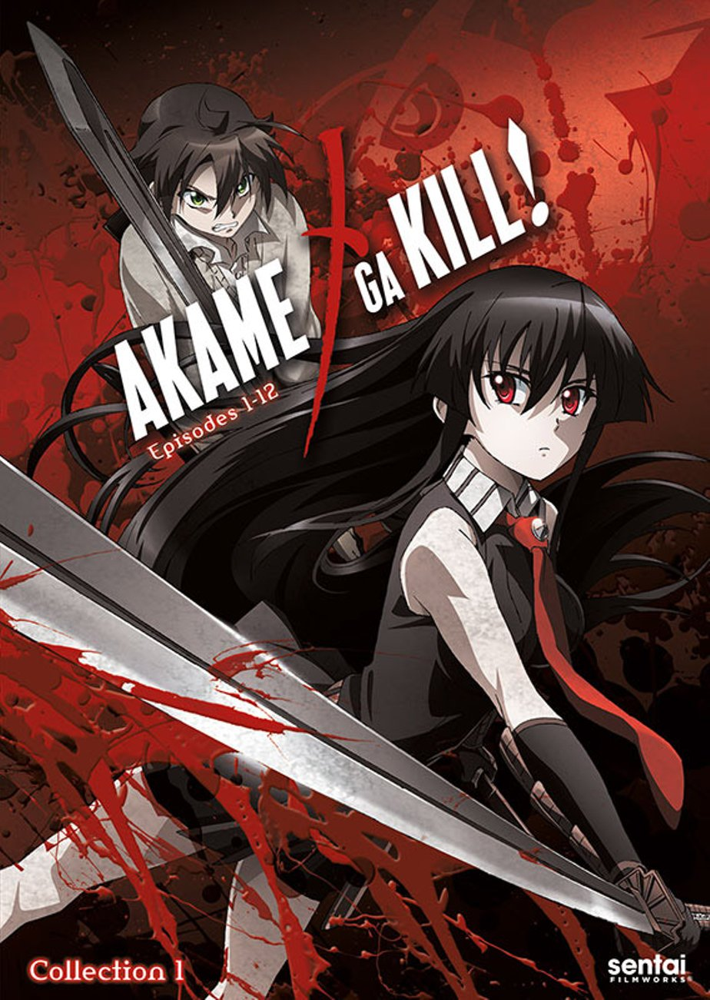
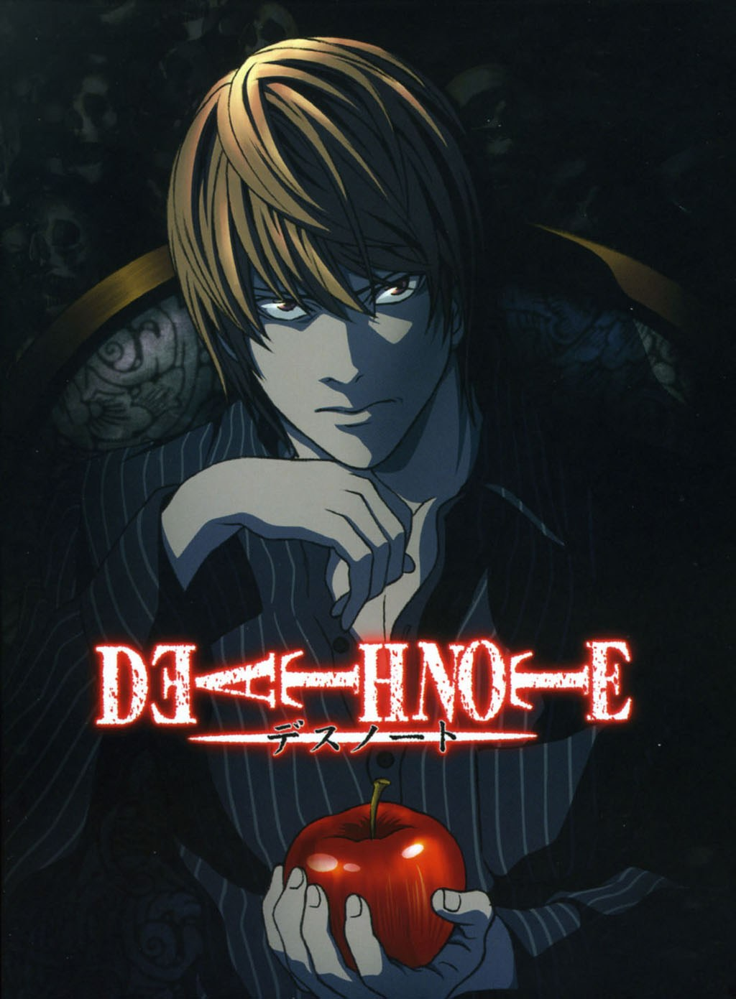
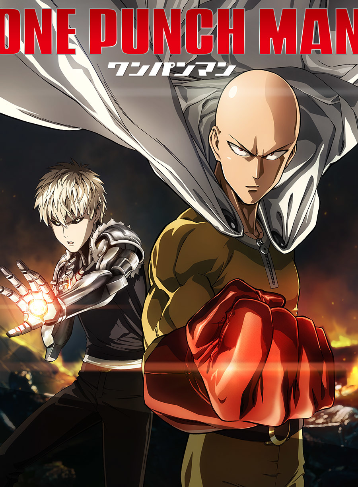

Вы всё же хотите смотреть аниме?
Если вы хотите начать смотреть аниме, то я настоятельно рекомендую начать просмотр с чего-нибудь от Хаяо Миядзаки.
"Ходячий замок", "Летающий замок Лапута", "Унесённые призраками"...
Всё это является хорошим началом. Также можно посмотреть картины Макото Синкая, например, "Твоё имя" или "Дитя погоды". Ещё могу
посоветовать аниме "Форма голоса" Наоко Ямады или "Я хочу съесть твою поджелудочную" Синъитиро Усидзиямы. Понимаю, название последнего
отталкивает, но всё изменится, когда вы посмотрите это аниме.
 

Но это всё полнометражные фильмы, так что стоит упомянуть ещё несколько сериалов.
Заранее предупреждаю, что некоторое аниме очень эмоциональное и заставляет плакать. Например, "Пластиковые воспоминания", или "Ангельские ритмы". Это хорошие и весёлые, но одновременно и грустные аниме. Невозможно неупомянуть "Твоя Апрельская ложь".
Ну, хватит о грустном. Пора смотреть что-то захватывающее. И первым претендентом станет "Убийца Акамэ", аниме в достаточно интересном сеттинге о котором я вам ничего не скажу). Сами смотрите. Сюда же можно добавить достаточно известную "Тетрадь смерти". Это аниме способно завлечь своим сюжетом многих. (предупреждаю: не смотрите адаптацию от Netflix). Устали от умственной работы, но хотите мощного экшена? Посмотрите аниме "One-punch Man"(Ванпанчмэн). Достаточно забавное и интересное аниме не оставит равнодушным ни одного любителя эпичных битв!
  Теперь настал черёд одних из моих любимых аниме. Подробно останавливаться на них не буду, но кое-что всё же расскажу.
Первое, "Re:Zero", повествует о подростке, попавшем в параллельный мир, но в отличие от других историй подобного жанра, наш герой не обладает абсолютно
никакими способностями. Он обычный, даже заурядный экс-школьник, за исключением одной очень важной особенности... Заинтересовал? Тогда вперёд!
Далее идёт история о нескольких подростках,которые случайно изобели машину, для отправки сообщений в прошлое. Привычная жизнь расходится по швам, а
главный герой оказывается вовлечён в заговор мирового масштаба...
Это был стартовый набор анимешника, который, по моему скромному мнению, очень даже подходит для новичков. Эти аниме не плохи,и хотя
каждому нравится своё, мне хочется верить, что среди этих аниме вы найдёте то, которое западёт вам в душу. Ну а дальше вам придётся самим искать,
ну или всегда можете написать мне, я всегда готов помочь)
P.s. В зависимости от перевода, аниме в виде сериала могут иметь разные названия и ненаходиться на сайте, на котором вы обычно смотрите, так что вам нужно будет самим найти вариации названий. Я же буду упоминать только самые распространённые.